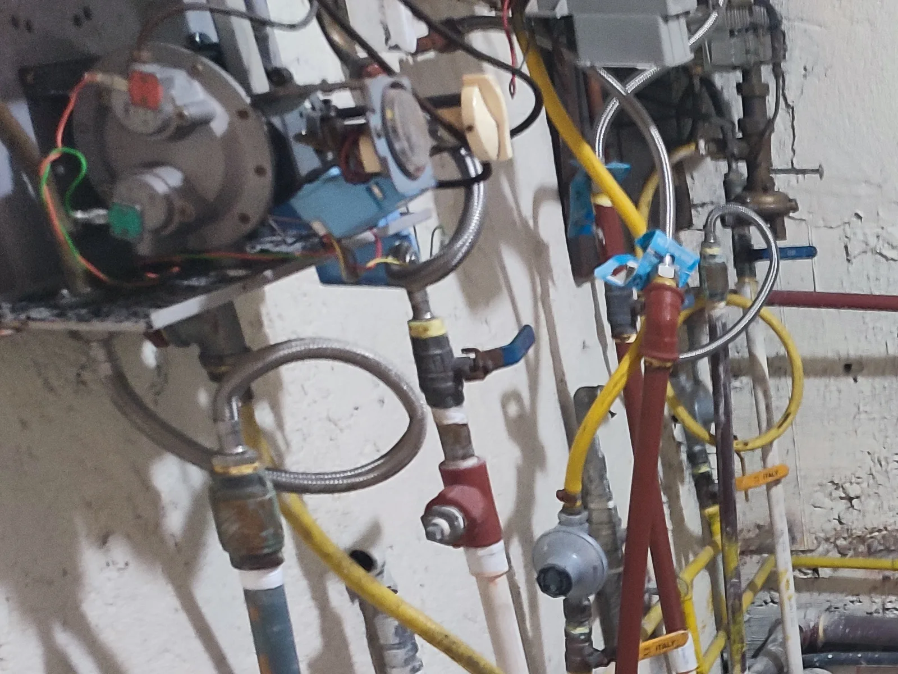

La caldera no enciende
Una falta de encendido requiere identificar el equipo y revisar sus condiciones de operación dentro del alcance aplicable.
Servicio técnico en Quito
Evaluación técnica de calderas y sistemas de agua caliente, previa identificación del equipo, sus condiciones visibles y el alcance aplicable.
Puede compartir una fotografía exterior o de la placa, sin abrir ni manipular el equipo, para orientar la solicitud inicial.

Estas señales orientan la consulta, pero no determinan por sí solas una causa. El diagnóstico depende del equipo instalado y de las condiciones observadas.
Una falta de encendido requiere identificar el equipo y revisar sus condiciones de operación dentro del alcance aplicable.
Una variación persistente debe evaluarse junto con los indicadores, conexiones y circuito hidráulico presentes.
El agua no alcanza la condición esperada o el suministro cambia durante el uso.
Las detenciones o señales del equipo deben documentarse y revisarse sin adelantar una causa.
Un sonido nuevo o diferente puede relacionarse con distintos componentes y requiere evaluación en sitio.
La presencia de agua o humedad alrededor del sistema debe revisarse para delimitar su origen y alcance.
El suministro irregular puede requerir revisar las condiciones hidráulicas y los equipos asociados presentes.
Cuando el sistema ya no responde como antes, conviene comparar su comportamiento actual con el historial disponible.
Una revisión planificada permite registrar el estado visible y definir tareas acordes con el equipo y su condición.
Cada actividad se confirma después de identificar técnicamente el equipo y determinar qué revisión puede realizarse.
Revisión de condiciones visibles, antecedentes reportados e indicadores disponibles para orientar los hallazgos.
Actividades planificadas de acuerdo con la configuración, la condición observada y el alcance autorizado.
Atención de hallazgos confirmados únicamente cuando el diagnóstico y el alcance acordado lo permiten.
Observación del comportamiento e indicadores disponibles cuando la prueba sea aplicable y pueda coordinarse.
Revisión de los indicadores existentes y su comportamiento durante la evaluación técnica aplicable.
Inspección de elementos visibles y accesibles que formen parte del alcance definido para el equipo.
Evaluación de condiciones visibles y funcionamiento aplicable de equipos asociados, cuando estén presentes.
Revisión de conexiones, circulación y señales visibles del circuito cuando formen parte del sistema evaluado.
Se considera únicamente según el tipo de equipo, su condición y el alcance previamente establecido.
No todas las calderas ni sistemas de agua caliente tienen la misma configuración. La visita se delimita a los elementos presentes y accesibles dentro del alcance.
La atención parte de información verificable y de un alcance acordado antes de intervenir.
La atención está sujeta a evaluación previa para personas responsables de la operación o mantenimiento del sistema.
Recibimos solicitudes en Quito y sectores de los valles, según coordinación, ubicación, identificación del equipo y alcance técnico.
La señal puede relacionarse con distintas condiciones del equipo. Para evitar conclusiones incorrectas, primero se identifica la configuración y luego se define la evaluación técnica aplicable.
Es una señal que debe compararse con el comportamiento habitual, los indicadores disponibles y las condiciones visibles del circuito incluido en la revisión.
Puede haber diferentes causas según el equipo, la demanda y el circuito. La evaluación permite delimitar qué elementos están presentes y qué comprobaciones corresponden.
El momento, la frecuencia y la señal mostrada ayudan a documentar el comportamiento, pero no sustituyen una revisión técnica del equipo.
Se puede evaluar la condición visible y delimitar el alcance relacionado con conexiones o circuito hidráulico cuando formen parte del sistema revisado.
Sí, como señales de consulta. La revisión de bombas asociadas y del circuito depende de que estén presentes y formen parte del alcance confirmado.
La frecuencia depende del equipo, uso, condición e historial. Una evaluación inicial permite proponer una periodicidad acorde con la situación observada.
Calderas y sistemas de agua caliente, previa identificación técnica del equipo. La atención solo se confirma cuando la configuración y el alcance pueden evaluarse.
Una descripción de lo que ocurre, el comportamiento observado y una fotografía exterior o de la placa, sin abrir ni manipular el equipo.
Un sistema de agua caliente puede incluir equipos hidráulicos, eléctricos y de control que requieran una revisión coordinada.
Antes de aprobar un gasto ante una directiva o una asamblea conviene saber a quién se contrata. Estos son nuestros respaldos.
Atendemos exclusivamente en las instalaciones del cliente: vamos al edificio, al conjunto o al local. Es nuestro modelo de trabajo.
Describa la señal observada y comparta una fotografía exterior o de la placa para confirmar si la solicitud está dentro del alcance técnico en Quito.